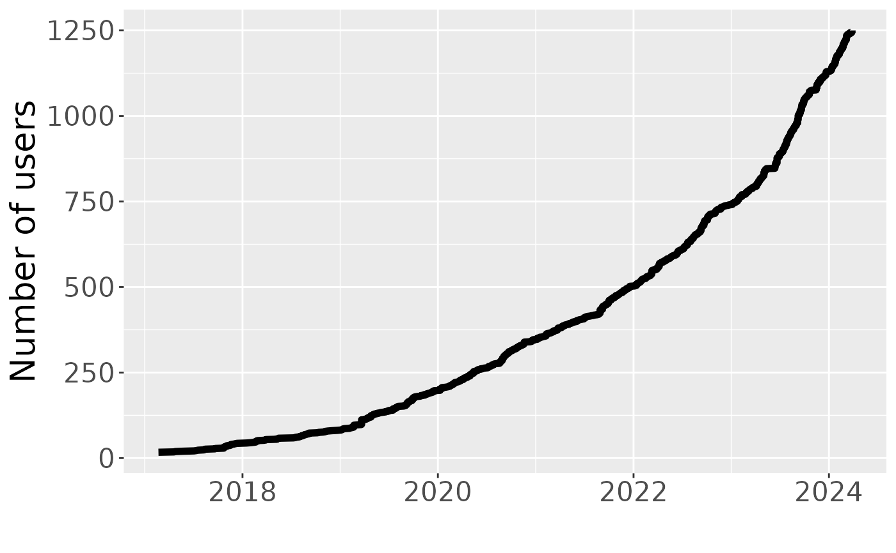

The number of Wynton users over time
users_over_time(file = NULL, since = "2017-01-01")A file with a single column of signup dates, or NULL. If NULL, then the Wynton LDAP server is queried.
Drop signup dates prior to this date.
A tibble::tibble with columns date and total,
total the cumulative sum based on date occurances.
library(dplyr)
#>
#> Attaching package: ‘dplyr’
#> The following objects are masked from ‘package:stats’:
#>
#> filter, lag
#> The following objects are masked from ‘package:base’:
#>
#> intersect, setdiff, setequal, union
pathname <- system.file("exdata", "ldap_wynton_dates.txt", package = "wyntonquery")
signups <- users_over_time(pathname)
print(head(signups))
#> # A tibble: 6 × 2
#> date total
#> <date> <int>
#> 1 2017-02-21 30
#> 2 2017-03-23 31
#> 3 2017-04-01 32
#> 4 2017-04-03 33
#> 5 2017-04-03 34
#> 6 2017-04-20 35
print(tail(signups))
#> # A tibble: 6 × 2
#> date total
#> <date> <int>
#> 1 2022-11-11 1640
#> 2 2022-11-15 1641
#> 3 2022-11-15 1642
#> 4 2022-11-15 1643
#> 5 2022-11-15 1644
#> 6 2022-11-16 1645
## Summarize by year and month
signups <- mutate(signups, year = format(date, "%Y"))
## Signups per calendar year
signups <- mutate(signups, month = format(date, "%m"))
signups <- group_by(signups, year)
signups_per_year <- count(signups, name = "change")
signups_end_of_year <- filter(signups, date == max(date), total == max(total))
signups_per_year <- left_join(signups_per_year, signups_end_of_year)
#> Joining, by = "year"
signups_per_year <- select(signups_per_year, year, change, total, per = date)
print(signups_per_year, n = Inf)
#> # A tibble: 6 × 4
#> # Groups: year [6]
#> year change total per
#> <chr> <int> <int> <date>
#> 1 2017 64 93 2017-12-21
#> 2 2018 99 192 2018-12-21
#> 3 2019 258 450 2019-12-18
#> 4 2020 344 794 2020-12-22
#> 5 2021 360 1154 2021-12-28
#> 6 2022 491 1645 2022-11-16
## Signups per calendar month
signups <- group_by(signups, year, month)
signups_per_month <- count(signups, name = "change")
signups_end_of_month <- filter(signups, date == max(date), total == max(total))
signups_per_month <- left_join(signups_per_month, signups_end_of_month)
#> Joining, by = c("year", "month")
signups_per_month <- select(signups_per_month, year, change, total, per = date)
#> Adding missing grouping variables: `month`
print(signups_per_month, n = Inf)
#> # A tibble: 70 × 5
#> # Groups: year, month [70]
#> month year change total per
#> <chr> <chr> <int> <int> <date>
#> 1 02 2017 1 30 2017-02-21
#> 2 03 2017 1 31 2017-03-23
#> 3 04 2017 7 38 2017-04-25
#> 4 05 2017 3 41 2017-05-26
#> 5 06 2017 1 42 2017-06-09
#> 6 07 2017 4 46 2017-07-19
#> 7 08 2017 4 50 2017-08-15
#> 8 09 2017 6 56 2017-09-28
#> 9 10 2017 14 70 2017-10-30
#> 10 11 2017 19 89 2017-11-30
#> 11 12 2017 4 93 2017-12-21
#> 12 01 2018 9 102 2018-01-31
#> 13 02 2018 8 110 2018-02-26
#> 14 03 2018 6 116 2018-03-29
#> 15 04 2018 5 121 2018-04-19
#> 16 05 2018 12 133 2018-05-29
#> 17 06 2018 4 137 2018-06-21
#> 18 07 2018 5 142 2018-07-20
#> 19 08 2018 14 156 2018-08-30
#> 20 09 2018 11 167 2018-09-27
#> 21 10 2018 11 178 2018-10-29
#> 22 11 2018 10 188 2018-11-30
#> 23 12 2018 4 192 2018-12-21
#> 24 01 2019 15 207 2019-01-25
#> 25 02 2019 19 226 2019-02-21
#> 26 03 2019 22 248 2019-03-22
#> 27 04 2019 24 272 2019-04-30
#> 28 05 2019 13 285 2019-05-28
#> 29 06 2019 15 300 2019-06-30
#> 30 07 2019 23 323 2019-07-29
#> 31 08 2019 20 343 2019-08-31
#> 32 09 2019 48 391 2019-09-28
#> 33 10 2019 24 415 2019-10-31
#> 34 11 2019 15 430 2019-11-26
#> 35 12 2019 20 450 2019-12-18
#> 36 01 2020 22 472 2020-01-31
#> 37 02 2020 18 490 2020-02-29
#> 38 03 2020 24 514 2020-03-27
#> 39 04 2020 30 544 2020-04-30
#> 40 05 2020 34 578 2020-05-29
#> 41 06 2020 11 589 2020-06-23
#> 42 07 2020 53 642 2020-07-29
#> 43 08 2020 35 677 2020-08-31
#> 44 09 2020 34 711 2020-09-29
#> 45 10 2020 29 740 2020-10-30
#> 46 11 2020 36 776 2020-11-24
#> 47 12 2020 18 794 2020-12-22
#> 48 01 2021 30 824 2021-01-29
#> 49 02 2021 33 857 2021-02-28
#> 50 03 2021 27 884 2021-03-31
#> 51 04 2021 33 917 2021-04-27
#> 52 05 2021 15 932 2021-05-21
#> 53 06 2021 25 957 2021-06-30
#> 54 07 2021 29 986 2021-07-30
#> 55 08 2021 34 1020 2021-08-30
#> 56 09 2021 42 1062 2021-09-30
#> 57 10 2021 37 1099 2021-10-30
#> 58 11 2021 23 1122 2021-11-30
#> 59 12 2021 32 1154 2021-12-28
#> 60 01 2022 34 1188 2022-01-30
#> 61 02 2022 33 1221 2022-02-26
#> 62 03 2022 73 1294 2022-03-31
#> 63 04 2022 42 1336 2022-04-30
#> 64 05 2022 31 1367 2022-05-28
#> 65 06 2022 39 1406 2022-06-29
#> 66 07 2022 57 1463 2022-07-27
#> 67 08 2022 54 1517 2022-08-31
#> 68 09 2022 58 1575 2022-09-24
#> 69 10 2022 42 1617 2022-10-26
#> 70 11 2022 28 1645 2022-11-16
if (require("ggplot2", quietly = TRUE)) {
gg <- ggplot(signups, aes(date, total)) + geom_line(linewidth = 2.0)
gg <- gg + xlab("") + ylab("Number of users")
gg <- gg + theme(text = element_text(size = 20))
until <- max(signups$date, na.rm = TRUE)
filename <- sprintf("users_over_time_%s.png", until)
ggsave(filename, gg, width = 8.0, height = 6.0)
print(gg)
}
